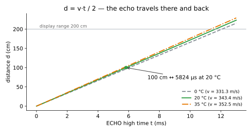
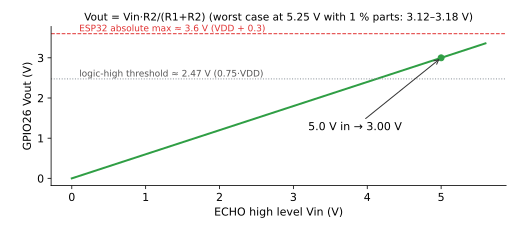
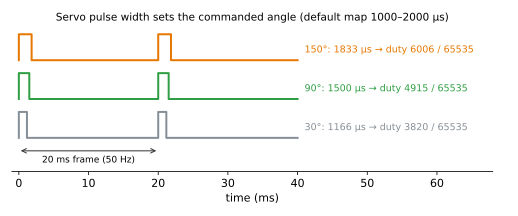
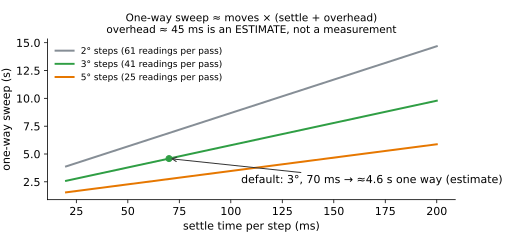

Equations — how the numbers work
Every equation below follows the same pattern: plain intuition → equation → symbols and units
→ worked example → picture. Every number on this page is re-computed by
tests/test_equations.py from one reference implementation,
tests/radar_math.py, whose integer maths mirrors the firmware. If a
number here and the test disagree, the test wins.
Run the checks: python -m pytest tests/test_equations.py -v
1. Ultrasonic distance
Intuition. The HC-SR04 clicks out a short burst of 40 kHz sound and holds its ECHO pin HIGH until the echo comes back. Sound travels to the object and back, so the object is half as far away as the total path the sound covered.
Equation.
$$d = \frac{v \cdot t}{2}, \qquad v \approx 331.3 + 0.606\,T$$
| Symbol | Meaning | Unit |
|---|---|---|
| $d$ | distance from the sensor face to the object | cm (firmware) |
| $v$ | speed of sound in air | m/s (÷10 000 → cm/µs) |
| $t$ | time the ECHO pin stays HIGH | µs |
| $T$ | air temperature | °C |
Worked example. At 20 °C, $v = 331.3 + 0.606 \times 20 = 343.42$ m/s $= 0.034342$ cm/µs. An ECHO pulse of 5 823 µs gives $d = 5823 \times 0.034342 / 2 = 99.99 \approx 100.0$ cm. Going the other way, 100 cm needs $t = 2 \times 100 / 0.034342 \approx 5 824$ µs.
Temperature matters. The same echo converted with the 20 °C constant on a 35 °C day reads
about 2.6 % short (97.4 cm instead of 100 cm). The firmware has an AIR_TEMP_C setting
because there is no temperature sensor in this build.
Timeout. The firmware stops waiting after the round trip for 110 % of the display range, plus
1 ms for the burst to start: $2 \times 220 / 0.034342 + 1000 = 13 812$ µs. A timeout shows ---.

2. ECHO voltage divider
Intuition. ECHO swings to 5 V, but the ESP32's pins are 3.3 V parts. Two resistors in series share the 5 V in proportion to their values; tapping the junction gives a safe, still clearly HIGH, ~3 V signal.
Equation.
$$V_{out} = V_{in} \cdot \frac{R_2}{R_1 + R_2}$$
| Symbol | Meaning | Value |
|---|---|---|
| $V_{in}$ | ECHO high level | 5.0 V nominal |
| $R_1$ | top resistor (ECHO → junction) | 2.2 kΩ |
| $R_2$ | bottom resistor (junction → GND) | 3.3 kΩ |
| $V_{out}$ | voltage at GPIO26 | V |
Worked example. $V_{out} = 5.0 \times 3.3 / (2.2 + 3.3) = 3.00$ V. Current through the pair is $5.0 / 5500 \approx 0.91$ mA — small.
Worst case. With the USB supply at its 5.25 V upper limit and 1 % resistors, $V_{out}$ stays between 3.12 V and 3.18 V — below the ESP32's ≈3.6 V absolute maximum ($V_{DD} + 0.3$). At the 4.75 V lower limit it is still ≥ 2.82 V, above the 2.475 V logic-HIGH threshold ($0.75\,V_{DD}$).

3. Servo timing and the LEDC duty
Intuition. A hobby servo expects one pulse every 20 ms. The width of the pulse is the command: about 1.0 ms means one end, 1.5 ms the middle, 2.0 ms the other end. The ESP32's LED Control (LEDC) peripheral makes this pulse in hardware by counting up to a "duty" value inside each 20 ms frame.
Equations.
$$T_{frame} = \frac{1}{f} = \frac{1}{50\,\text{Hz}} = 20\,000\ \mu s$$
$$\text{pulse}(\theta) = P_0 + (P_{180} - P_0)\cdot\frac{\theta}{180}$$
$$\text{duty} = \left\lfloor \frac{\text{pulse} \cdot (2^{16} - 1)}{T_{frame}} \right\rfloor$$
| Symbol | Meaning | Default |
|---|---|---|
| $f$ | PWM frequency | 50 Hz |
| $\theta$ | commanded angle (not measured) | 30–150° |
| $P_0$, $P_{180}$ | pulse widths mapped to 0° and 180° | 1000 µs, 2000 µs |
| duty | LEDC compare value, 16-bit resolution | counts out of 65 535 |
Worked example. 90° → $1000 + 1000 \times 90/180 = 1500$ µs → duty $\lfloor 1500 \times 65535 / 20000 \rfloor = 4915$ (7.5 % of the frame). 30° → 1166 µs → 3820; 150° → 1833 µs → 6006. One LEDC count is about 0.31 µs, far finer than the servo's ≈10 µs dead band.
Why 1000–2000 µs is only a starting point. Many SG90s travel further than 90° for 1.0–2.0 ms,
so the real head angle may not equal the commanded angle on screen. Use CALIBRATE_SERVO and the
tick marks on the turret keeper to adjust SERVO_US_AT_0 / SERVO_US_AT_180, and never widen the
map so far that the servo buzzes against its internal stops. A hard clamp (SERVO_US_GUARD_MIN/MAX,
900–2100 µs) protects against a bad edit.

4. Sweep cadence
Intuition. Each reading costs a fixed wait for the servo to settle, plus the time to ping and redraw the screen. The number of readings per pass is fixed by the step size. Multiply.
Equations.
$$N_{moves} = \frac{\theta_{max} - \theta_{min}}{\Delta\theta}, \qquad T_{step} = t_{settle} + t_{overhead}, \qquad T_{one\,way} = N_{moves} \cdot T_{step}$$
$$f_{refresh} = \frac{1}{T_{step}} \quad\text{(one full frame is drawn per reading)}$$
| Symbol | Meaning | Default |
|---|---|---|
| $\Delta\theta$ | step | 3° |
| $\theta_{min}, \theta_{max}$ | sweep limits (commanded) | 30°, 150° |
| $t_{settle}$ | wait after each move | 70 ms |
| $t_{overhead}$ | ping + draw + SPI frame push | ≈31 ms — ESTIMATE |
Worked example. $N = 120/3 = 40$ moves (41 readings per pass). The screen push alone is $160 \times 128 \times 16\ \text{bit} / 15\ \text{MHz} \approx 21.8$ ms; add ≈3 ms drawing and ≈6 ms for a ~1 m echo → $t_{overhead} \approx 31$ ms, $T_{step} \approx 101$ ms, one way ≈ 4.0 s, a full round trip ≈ 8.1 s, screen refresh ≈ 9.9 frames/s. Detections live for 9 s, longer than one round trip, so each dot stays until its angle is revisited.
This is an estimate, not a measurement. The firmware prints the measured mean step time and
one-way sweep time over serial after every pass — record the real numbers in
VALIDATION.md (test T-FW-4). Two sanity checks that are derived: a 3° move at
the SG90's ~0.1 s/60° takes ~5 ms (well inside the 70 ms settle), and the ≥70 ms cycle respects the
common HC-SR04 guidance of ≥60 ms between pings so old echoes die away.

Source: docs/EQUATIONS.md — generated by scripts/build_site.py